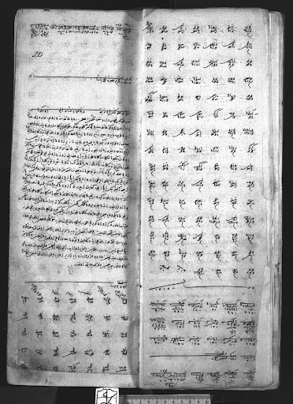
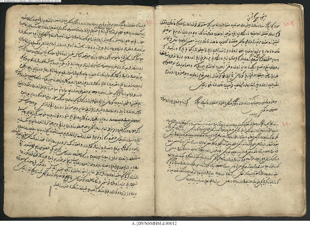
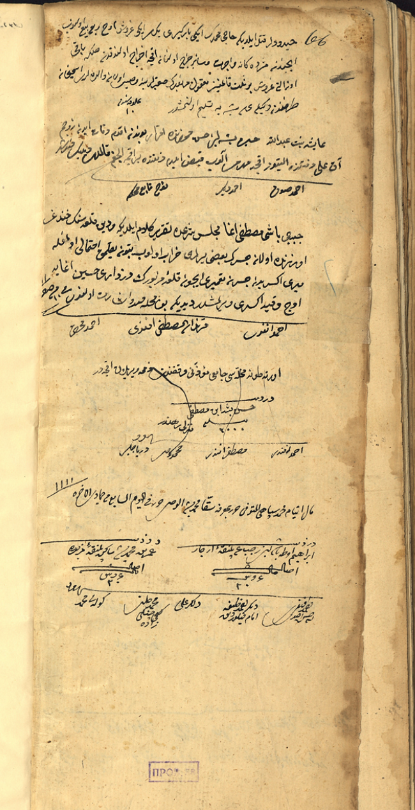
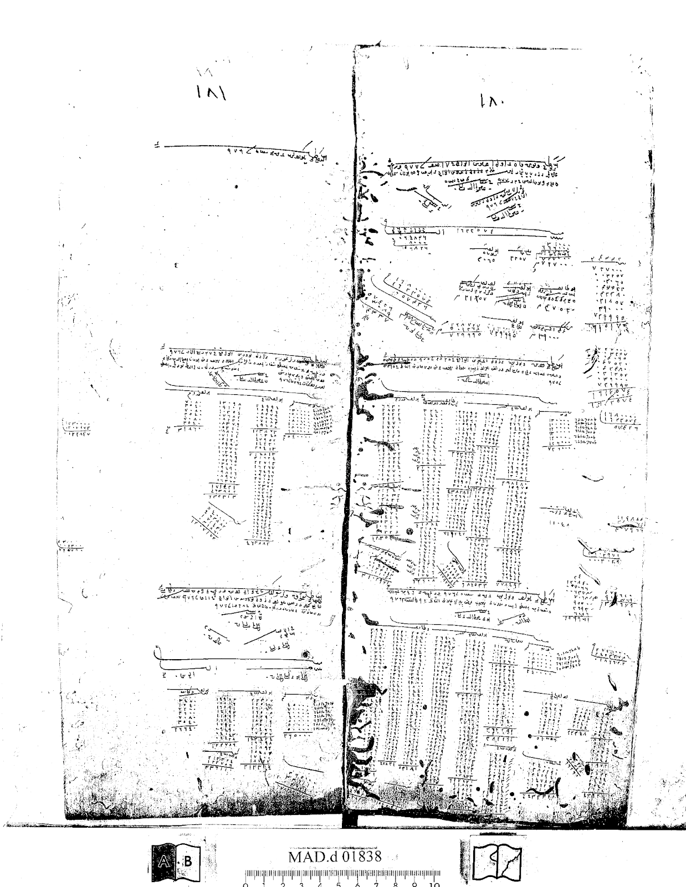
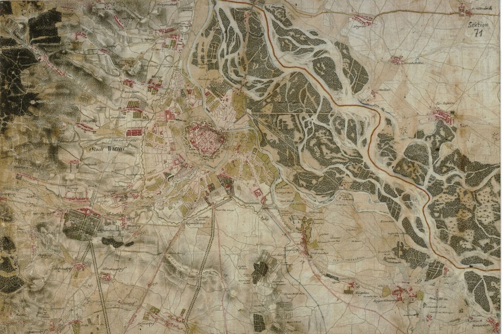

DANFront uses various sets of Ottoman and European archival and published materials, as well as cartographic sources, to extract data.
For this project, a substantial corpus of tax survey registers from the Danubian sanjaks of the Ottoman Empire, primarily dating from the sixteenth century, has been examined in order to reconstruct the spatial organization of settlements, the distribution of timars, and the fiscal foundations of the Ottoman military presence along the river. These registers provide detailed information on households, agricultural production, fortress-related timars, and revenue structures, enabling us to situate military infrastructures within their socio-economic context. At the same time, they contain references to flood-related casualties, material damage, and regulations concerning the Danube, allowing us to trace how environmental disturbances were recorded, assessed, and integrated into the fiscal-administrative system.

BOA MAD 11, folio 19B-20A.
These registers contain the orders of the Imperial Council, confirmed by the sultan, and constitute a central source for understanding the Ottoman state's decision-making processes. These registers provide valuable information on bridge-building, fortress construction and repair, the mobilization of labor and resources, and logistical arrangements along the Danube. They also allow us to identify river-related challenges—such as floods, inundations, navigation problems, and infrastructural damage—and to trace how these disturbances were assessed and addressed at the imperial level.
For the purposes of this project, an extensive corpus of mühimme registers from the mid-sixteenth to the late seventeenth century has been examined to reconstruct patterns of state intervention and contextualize environmental events within broader military and administrative strategies. A significant portion of these registers is available in transliterated form, facilitating systematic keyword searches and comparative analysis.

A page from a mühimme defteri (A. DVNSMHM.d.00012).
Sicils are records of the legal proceedings made by the judge (kadi) or his scribes. They are court registers that contain information on diverse subjects, including local politics, social stratification, commercial agreements, and conflicts. They also contain invaluable material on settlements' spatial organization, including garrisons, palankas, and water mills.

An excerpt from a kadi sicili.
The financial records of the Ottoman Empire include several archival documents. One of them is payroll registers. They contain data on payments to garrison forces, including the types and divisions to which they were allocated. Tax surveys and payroll registers are complementary archival documents for extracting data on the garrison forces.
Another financial record to be used for the project is the muqataa registers. They are records of the lease of tax units to private contractors, and they enable tracking of the source of funds and their transfer for the payment of garrisons or for the repair or construction of buildings.
Lastly, we will examine miscellaneous financial records that also include information on payments for the construction and repair of fortresses, bridges, and other fluvial structures; materials used; the sheep tax (adet-i agnam vergisi); and mine income.

A page from a muhasebe defteri (MAD.d 01838).
In addition to archival sources, DANFront uses textual sources from the 16th and 17th centuries that provide valuable information on the administration of the Ottoman Empire, social and economic life, and campaigns along the Danubian frontier.
Chronicles constitute an important narrative source for reconstructing the Danubian socio-natural landscape. They provide detailed accounts of river navigation, environmental characteristics of riverine settlements, alterations to the fluvial landscape, and extraordinary events such as floods, droughts, and icing. Unlike administrative records, which document institutional responses, chronicles often describe how such environmental disturbances were perceived, narrated, and embedded within broader political and military contexts. In this project, chronicles are used to contextualize archival data, to trace the experiential and discursive dimensions of environmental change, and to identify patterns of crisis, adaptation, and continuity along the Ottoman Danube frontier.
Campaign daybooks, such as Sultan Mehmed III's campaign to Eger in 1596, the German campaign of Sultan Süleyman I (1532), as well as Süleymannâmes, contain information about fortresses, campaigns, weather patterns, rainfall, and floods. Furthermore, invaluable information about the Ottoman bureaucracy and campaign preparations, including logistics, campaign routes and bridges, can be found in rûznâmes, such as Abdullah Üsküdari's Vâki'ât-i Rûz-merre, which covers the years 1688–1693.
Geography books, such as Asik Mehmed's Menâzirü'l Avâlim and Kâtip Çelebi's Cihannüma, contain valuable information on the empire's geography and topology. They inform the reader about towns, rivers, islands, lakes, mines, animals and people. Evliya Çelebi's ten-volume Seyahatnâme offers invaluable insights into the Ottoman Danubian environment, settlements, and strongholds. In short, chronicles and travel books are vital sources that complement and corroborate information derived from archival documents.
Travelogues are one of the most essential source bases of the DANFront project, as they provide contemporary observations of the Danube's landscape, infrastructure, and environmental conditions from the sixteenth and seventeenth centuries. Unlike Ottoman administrative records, which reflect institutional responses, travel accounts capture how ambassadors, merchants, soldiers, and other travelers experienced the river in practice, describing floods, marshlands, whirlpools, fortresses, bridges, shipyards, and patterns of mobility.
In DANFront, we systematically analyze a multilingual corpus of travelogues through keyword searches and close reading in order to extract references to environmental events and military infrastructures. These references are then integrated into our database and GIS visualizations, allowing us to cross-check archival material, reconstruct perceptions of risk and navigation, and better understand how the Ottoman Danube frontier functioned as a lived socio-natural environment.
A vast number of European travelers and diplomats used, observed, and reported on the Danube in the early modern period. DANFront uses travelogues and the ambassadorial reports of Habsburg envoys, such as Ogier Ghiselin de Busbecq (1554), Salomon Schweigger (1578), and Reinhold Lubenau (1587), which offer an outsider's perspective on the Ottoman Danube.
At the Hungarian National Archives in Budapest, we have examined the urbaria, gentry censuses, and property and estate valuations dating from 1527 to the 18th century (MNL E 156 Urbaria et Conscriptiones) in the Magyar Kamara Archívuma [Archives of the Hungarian Chamber].
At the Nicolae Iorga Institute of History in Bucharest, we have consulted the Wallachian charters and writs recorded in Old Church Slavonic and Romanian Cyrillic. There are approximately 2,500 charters from the 16th century and even more from the 17th century. Most of the charters are collected in volumes titled Documenta Romaniae Historica and are available online, enabling keyword searches related to the subject.
DANFront integrates historical cartographic material into the examination of the military and environmental history of the Lower and Middle Danube in the early modern Ottoman Empire. Historical maps and land surveys include information such as terrain, crossing points, moors, woods, settlements, bridges, roads, etc.
DANFront has employed two maps to examine the Danube River in relation to its military use.
It was the first comprehensive land survey and mapping of the Habsburg Empire. The survey was ordered by Holy Roman Empress Maria Theresa after Austria's defeat in the Seven Years' War. It was conducted from 1763 to 1787 (during the reign of Maria Theresa and completed in the reign of Holy Roman Emperor Joseph II). The maps are hand-drawn and were initially at a scale of 1 Viennese inch (approximately 1:28,800). The Josephinian Land Survey ultimately comprised more than 4,000 sheets from 1763 to 1785. The maps are currently stored in the National Archives of Austria.
In the project, we have examined 278 sheets from the Banat of Temeswar (1769–1772) and the Kingdom of Hungary (1782–1785).

An excerpt from the Josephinian Land Survey, showing Vienna and its surrounding.
Source: Königreich Ungarn. The First Military Survey / Die Erste Militärische Aufnahme / Az Elso Katonai Felmérés 1763–1785. Digitized Maps of the Habsburg Empire, DVD, Institute and Museum of War History of Hungary; Arcanum Adatbázis Kft., Budapest, 2004.